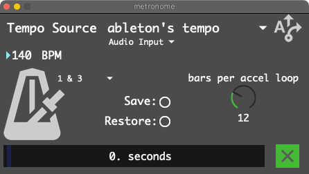

Metronome
Here you can set SousaFX’s tempo source, enable the click, choose which beats the click plays on, and set the length of the continuous accelerando.
{kind=link}
Tempo Source
Tap Tempo: Tempo set by tapping. Metronome resets when unmuted, so be sure to unmute on the downbeat. LFO retriggered by “transient detection”, and by unmuting the metronome
This is best when playing freely, without a click.
Ableton’s Tempo: Tempo, LFO, and Metronome all locked to Ableton Live.
This is best when playing along with clips in Live.
Metronome’s Tempo When On: When the metronome’s muted, the LFO is retriggered by transient detection. When metronome is active, the LFO is locked to the metronome. The metronome resets when unmuted, so be sure to unmute on the downbeat.
This is best when playing with folks who can monitor a click. For example: The drummer can improvise a groove at any tempo, and you can tap tempo along. Then you can unmute the metronome on the downbeat, the LFO will lock to the metronome, and the drummer can listen to the click.
Metronome’s tempo always: The metronome is free-running and isn’t reset when unmuted. The LFO is locked to the metronome while muted and unmuted.
tbh i never use this one
Audio Input or Live Link
When the Tempo Source is Ableton’s Tempo, this setting selects wether Ableton’s sync signal is sourced from the “phasor1n” Max For Live device, or Live Link.
Live Link is simple to set up, but gets offbeat if the tempo changes suddenly. It also needs to be enabled in Ableton Live every time you start Live.
The “phasor1n” Max For Live device sends a 1-bar-long phasor audio signal out of Live and into Max. It’s always in time, but you have to loopback its audio from Live to Max.
Clicks
This menu picks which beats the metronome should emit a click on.
1 & 3
1 2 3 & 4
Continuous Accelerando
This is an experimental feature that affects the Metronome, Modulation, Loopers, and Drum Clips. It is only enabled when the Tempo Source is Ableton.
“Bars Per Accel Loop” sets how long it takes for a continuous accelerando to reach its original tempo.
When Continuous Accelerando is toggled off, the number of seconds remaining in the accel loop is displayed, and the accel ceases once the original tempo is reached.
To set up this effect, SousaPlayback’s “drum bus” track’s “Risset Ext FX” device’s “Audio To” output must be routed to SousaFX’s “drum tracks L / R” input, and SousaFX’s “Drum Clips Risset L / R” output must be routed to SousaPlayback’s “drum bus” track’s “Risset Ext FX” device’s “Audio From” input.
Note
Two great examples of continuous decelerandos are Autechre Fold4 Wrap5, and Vijay Iyer Historicity.